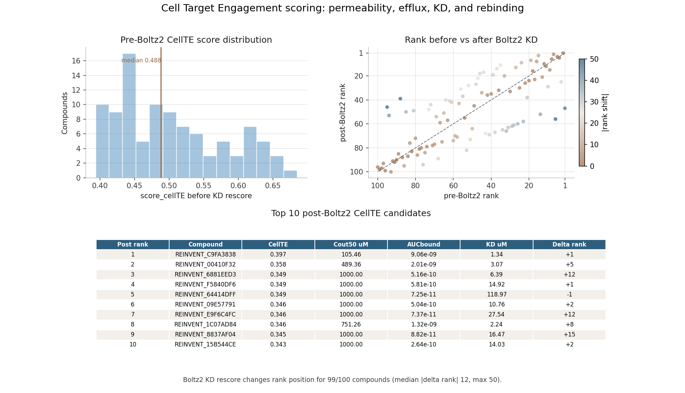
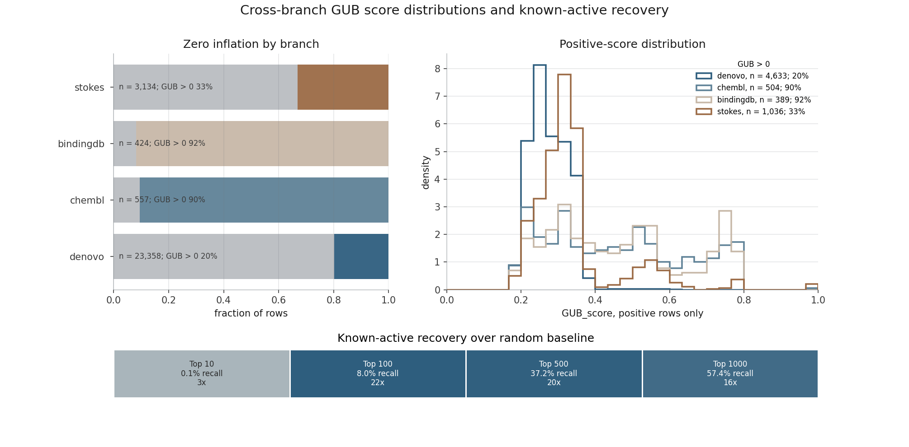
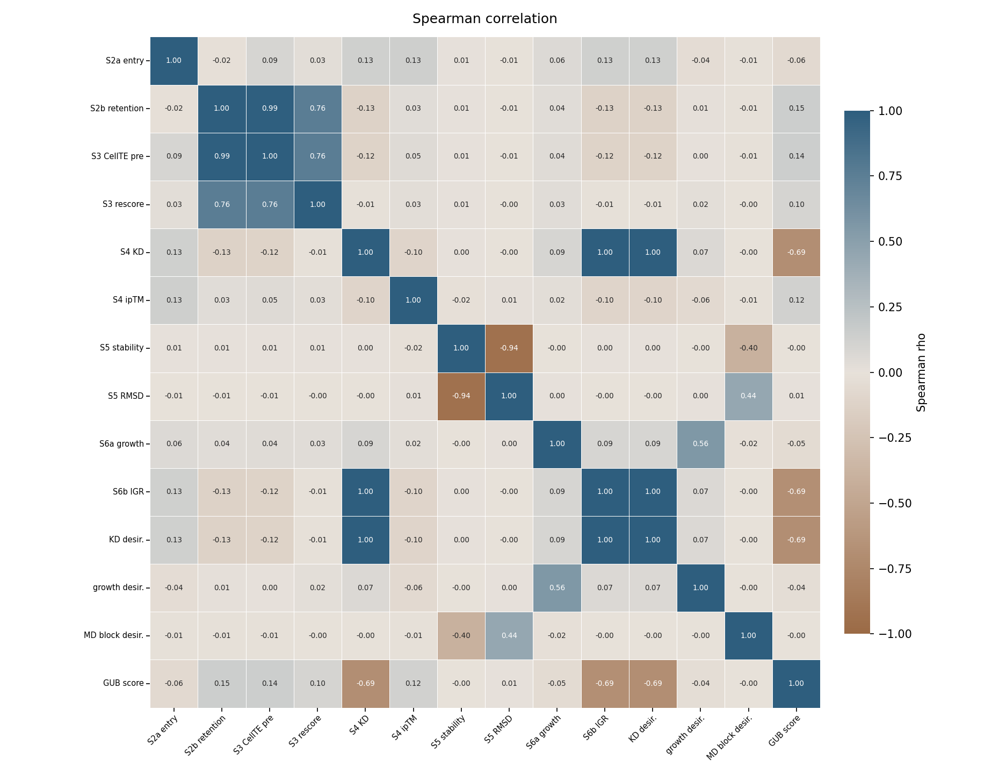
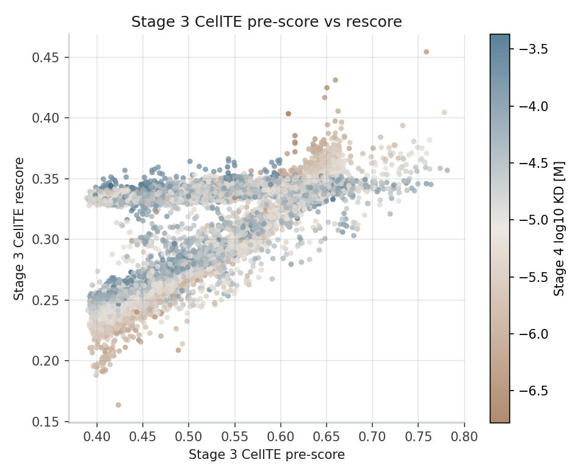
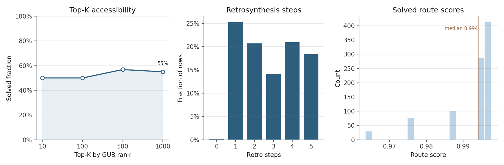

REINVENT4 and RDKit
Generate SMILES, canonicalise structures, remove invalid records, and filter by Lipinski, Veber, PAINS, scaffold, similarity, and Gram-negative entry heuristics.
A reproducible PROTO-NOOS pipeline for prioritising small-molecule candidates in an E. coli DHFR context by combining molecular generation, structural prediction, short-MD checks, systems biology, cell target engagement, and retrosynthetic accessibility.
Computational antibiotic discovery requires combining chemical generation, structural modelling, physical validation, biological interpretation, and synthetic feasibility into a reproducible workflow. This study presents the PROTO-NOOS pipeline, an in silico pipeline for prioritising small-molecule candidates in an E. coli DHFR context. The workflow used REINVENT4 for de novo molecule generation, RDKit-based physicochemical and Gram-negative entry filtering, Boltz2 for protein-ligand complex and affinity prediction, GROMACS for molecular dynamics stability checks, BioTransformer3 and COBRApy/iML1515 for metabolite and target-perturbation analysis, CellTE for ODE-based intracellular target engagement, and AiZynthFinder for retrosynthetic accessibility. The pipeline connects chemical, structural, MD, metabolic, target-level, and retrosynthetic evidence in one screening process. Its outputs should be interpreted as computational ranking features for hypothesis generation, not as confirmed antibacterial activity, because synthesis, antibacterial assays, toxicity testing, and wet-lab validation were outside the scope of this work.
PROTO-NOOS treats early antibiotic discovery as a staged prioritisation problem. Each tool contributes a weak but inspectable signal, and the final ranking is based on agreement across chemical, structural, biophysical, cellular, and synthetic constraints rather than on a single affinity score.
Generate SMILES, canonicalise structures, remove invalid records, and filter by Lipinski, Veber, PAINS, scaffold, similarity, and Gram-negative entry heuristics.
Predict protein-ligand complexes for PDB 6XG5, estimate affinity-related signals, and run short MD gates for physical plausibility.
Map metabolite predictions into iML1515, simulate target-level folA perturbation, and separate metabolic context from direct binding evidence.
Model intracellular target occupancy with entry, efflux, association, and dissociation terms, then screen ranked candidates for retrosynthetic feasibility.
The current run demonstrates workflow feasibility and exposes where the evidence is strong, weak, or contradictory. The key value is structured triage: fewer candidates move into expensive downstream PROTO-NOOS BCA, where pocket contacts, NADPH context, MM-GBSA, PLUMED metadynamics, and selected QM/DFT descriptors can be inspected in greater detail.
Of 100 generated compounds, 27 retained a non-zero PROTO-NOOS score; the rest were treated as resistant or low-priority under the current evidence model.
Post-Boltz2 rescoring combines predicted affinity with entry and efflux dynamics, allowing compounds with similar KD values to separate by Cout50 and AUCbound.
The 100 ps high-throughput mode is useful for flagging unstable systems, but kinetic proxies are explicitly treated as weak labels.
The top PROTO-NOOS-ranked molecule was not solved by AiZynthFinder in the reported batch, while several lower-ranked candidates had practical synthetic routes.

ODE-based intracellular target occupancy reframes affinity as one part of a cellular accumulation and binding process.
The figures below summarise the evidence blocks used by the manuscript: branch-level PROTO-NOOS distributions, inter-stage agreement, CellTE rescore behaviour, retrosynthetic feasibility, and final target-engagement interpretation.

Shows how different evidence branches shape candidate prioritisation before final interpretation.

Spearman correlations identify which pipeline stages support each other and where evidence diverges.

Compares CellTE ranking before and after Boltz2-derived KD_pred is introduced into the occupancy model.

Contrasts predicted biological priority with route solvability, route score, stock coverage, and route depth.
The poster gives the compact visual version of the workflow, while the manuscript describes the full scientific scope, limitations, stage contracts, and interpretation rules.
PROTO-NOOS is an in silico prioritisation framework, not a confirmed antibiotic discovery. The current study does not include compound synthesis, MIC testing, target-engagement assays, cytotoxicity assays, toxicity validation, or wet-lab antibacterial experiments. The practical conclusion is therefore limited to workflow feasibility, hypothesis generation, and candidate triage before deeper simulation or experimental follow-up.